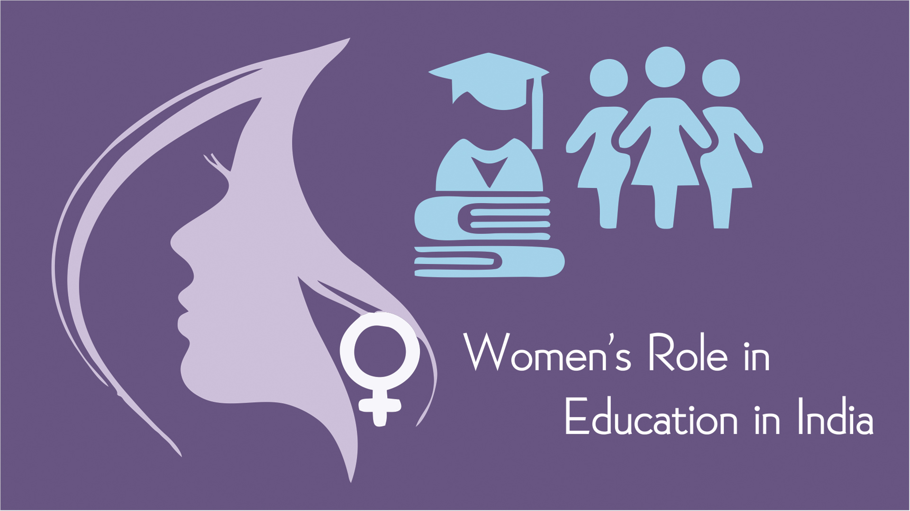
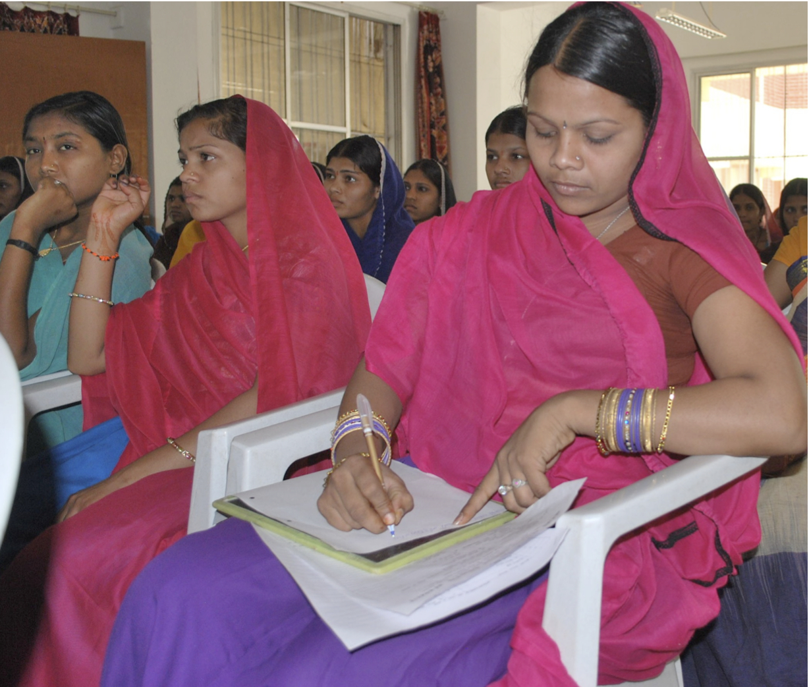
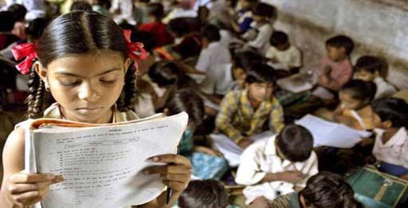
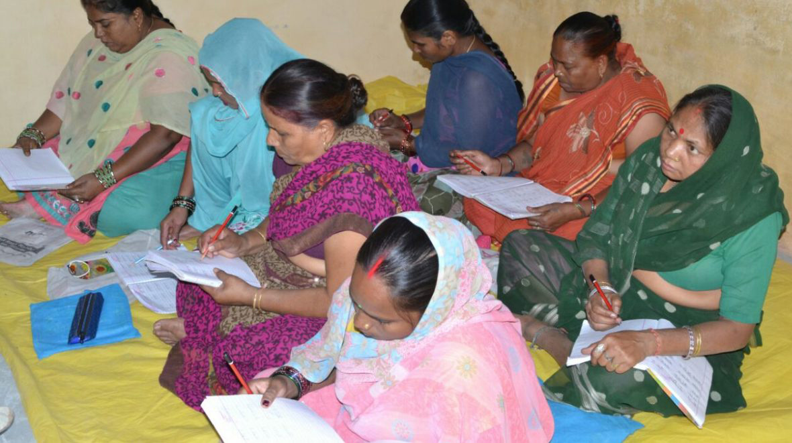
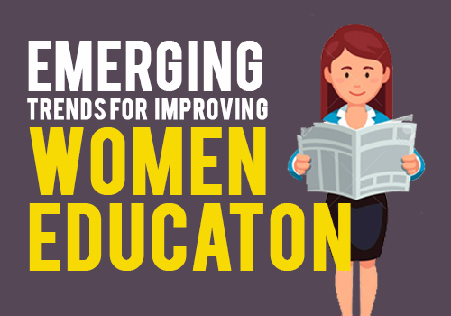

Charity
Be a Volunteer
GET IN TOUCH
T (+91) 9509168342
Email: keshavkhandelwal.jwr@gmail.com


Emphasizing the need for ensuring the continual empowerment of women worldwide, the United Nations made equal access to education for girls a central focus of its Millennium Development Goals. The U.N. has made the elimination of gender disparities in primary and secondary education its third goal. Furthermore, it sought to reconcile the injustice that limited women’s opportunities for both education and, by extension, employment. Since the completion of the Millennium Development Goals, women have constituted 41 percent of paid workers in fields outside of agriculture. This is a tremendous increase from the 1990 rate of 35 percent.
Educated women are likely to marry at later ages and consequently have fewer children. In fact, by simply providing girls with an extra year of schooling, nations can reduce a woman’s fertility rate by 5 to 10 percent. Limiting the number of individuals present will ensure improved accessibility to resources and better opportunities for all people, particularly in countries struggling with overpopulation, such as Nigeria and China.
Girls who stay in school longer lower their probability of contracting HIV, thereby adding securing their health and wellbeing. In fact, the Girls Global Education Fund has reported that in Africa, children born to mothers who have not received education have a one in five chance of dying before age 5.
Improving women’s education promotes continued education for whole families. In sending women to school, they are likely to encourage their children’s educations. This chain reaction illustrates the ways in which educating a girl improves an entire nation’s access to education.
For each additional year that a girl spends in primary school, her wages increase by up to 20 percent. By continuing with her education through secondary school, her wages increase by 25 percent. Improving education for girls therefore ensures their socioeconomic stability and successes worldwide.
By providing women and girls access to education, the probability of their involvement in the political process increases. Through education, women are more likely to participate in civic engagement and decision-making. Consequently, this promotes a more representative government. In fact, the average proportion of women in parliaments across the world has doubled over the past 20 years. This is a direct result of the success of the U.N. Millennium Development Goals in reducing the gender disparity in primary and secondary school education.
In recent years, young women accounted for 59 percent of the total illiterate population. By providing women and girls with an education, illiteracy rates worldwide will inevitably increase, suggesting the overarching trend of global educational success. Educational depravation for women and girls has proven costly for the global economy. By refusing to give women and girls education, individual economies suffer as much as a $1 billion loss in revenue. Throughout the world, this constitutes a $92 billion loss each year. This suggests that investing in women’s education is a lucrative decision for all nations to make.
Girls’ education has a tremendous impact on the environment. According to the Brookings Institution, secondary educational opportunities for women remain the most cost-effective investment against climate change. When girls are educated, communities maintain their stability at higher rates and can recover faster from conflict. By providing women and girls with secondary educational opportunities, nations also reduce their risk of war substantially and secure limitations on terrorism and extremism. Ultimately, girls’ education holds significant implications for the global community. By improving women’s education, the world thrives both socially and economically. It is critical for nations to invest in women’s education in order to guarantee both individual and global success.
Charity
Be a Volunteer
GET IN TOUCH
T (+91) 9509168342
Email: keshavkhandelwal.jwr@gmail.com